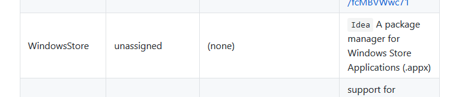

日記：Surface Book 2 をクリーンアップした
執筆日時：
週末は Surface Book 2 をクリーンアップしていた。
というのも、この前発生していたコンテキストメニューが壊れる不具合がどうにも直らない。不要なアプリを削除したり、レジストリをいじったりすると直ったような気になるが、しばらく経つとまた壊れる。グラフィックドライバーがダメだと手の施しようがないが……ともあれ、数か月使って環境も汚れてきたことだし、ここでクリーンアップするのも悪くはないだろう。
むかしは OS のクリーンインストールと環境の復旧は大変めんどくさくて、半日がかりでやっていた気がするけど、最近はデータをクラウドに保存するようになったせいか、それほど手間ではない。PowerShell と Chocolatey で作った初期化スクリプトのおかげもあり、ほぼ全自動で行える。
今回はインストールアプリの整理もやった
choco install -y sizer choco install -y dotnetcore-sdk choco install -y visualstudiocode choco install -y dropbox choco install -y vlc # choco install -y skype choco install -y googlechrome choco install -y unchecky choco install -y paint.net choco install -y firefox追加
choco install -y visualstudio2017community choco install -y steam choco install -y github-desktop
visualstudio2017community パッケージは Installer が追加されただけで、本体のインストールには失敗していた？ どうせワークロードの選択しなきゃいけないから別にいいんだけど。デスクトップ Skype は不要になったので削除した。使いことがあっても今度からは UWP 版で済ませる。
残った手作業の中で面倒なのは、各種サービスのログイン処理だろうか。自分は頭の固い人間だから、パスワードロッカーのようなサービスに手を出せずじまいでいるのだけど、今回は STEAM のパスワードがどうしても思い出せなくて……そろそろ導入すべきかな、などと感じている。使いやすくて、データを流出させたり、脆弱性の修正を隠したりしないところがいいんだけど、どこかいいところはないだろうか。
あと、ソフトウェアのライセンス管理が面倒くさい。うちの場合、
- EmEditor
- WinSnap
がそれに該当するのだけど……ストアで配布してくれたら買いなおすわ。あと、ストアアプリのインストールも面倒……OneGet で Windows Store プロバイダーが使えたりしたらいいのになぁ……。

一応リクエストはあるみたいだけど、何も動きはないみたい。
それはともかく、今回のクリーンアップで2、3、軽いトラブルにあったのでメモしておこうかと思う。
キーボードが英語配列として認識される
Surface シリーズではもうお馴染みとなったこの不具合……もう嫌になっちゃうよね。でも、最近は GUI で治せるようになったからちょっとましかもしれない。

まず「設定」アプリで［言語と時刻］－［地域と言語］を開き、日本語のオプションへアクセスする。
んで、ハードウェア キーボード レイアウトを“日本語キーボード（106/109 キー）”に変更すれば OK。以前は英語キーボードだったからこうしたトラブルとは無縁だったのだけど、自分の身に降りかかるとクソうっとうしいな。
なお、反映させるには一度サインアウトしなきゃいけない。
ディスクリート GPU が認識されない
早速 Civilization 6 で遊んでみるかと思ってゲームを起動すると、どうも遅い。調べてみると Intel の内蔵グラフィックスで動いていた。GeForce GTX 1050 が見当たらない……。
これはベースからトップを外してガチャガチャしてたらいつの間にか直った。

再起動してって言われたのでその通りにすると、外部 GPU が復活した……「タスク マネージャー」で“GPU 1”って表示されてたのが“GPU 2”になっちゃったけど、キニシナイ。

サウンドが死ぬ
トラブルシューティングアシスタントに従ってドライバーを再インストールしたら直った。さほど手間ではないし、ハマるところもないと思うので割愛。
ほかにやったこと
- ディスクアクセスが遅い気がしたので、Bitlocker は無効化した
- 要ライセンスアプリの代替品評価 → んー、やっぱり使い慣れたものがいいのでやめた